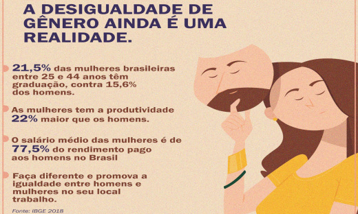
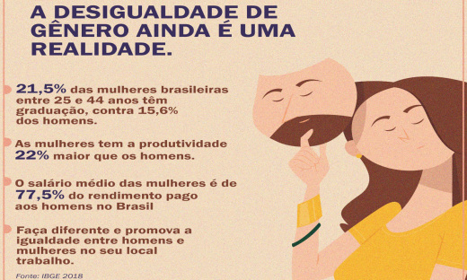

Levantamentos
Muitos homens ainda enxergam as mulheres como frágeis e incapazes. Como se não tivessem inteligência suficiente para lidar com questões mais complexas, exigidas por cargos mais altos, ou se não merecessem o mesmo tipo de tratamento na empresa, ou também de liderança. Isso pode trazer algumas situações que gerem grandes constrangimentos, agressão verbal e não verbal, assédios, torturas psicológicas, etc. Em pesquisa realizada em 2020, pelo Instituto Patrícia Galvão e Instituto Locomotiva, com o apoio da Laudes Foundation, foram entrevistadas 1.500 pessoas, tendo como objetivo colher relatos e experiências de mulheres e homens sobre as violências que são sofridas por mulheres no ambiente de trabalho. A pesquisa traz dados de conhecimento da maioria da população, como a diferença salarial, a necessidade da mulher conciliar as tarefas familiares com o trabalho, entre outras No entanto, o que mais chama atenção nos dados trazidos são os números de assédios no ambiente de trabalho, o que dificulta, e muito, o dia a dia da mulher no mercado de trabalho
Uma pesquisa conduzida pela empresa de recrutamento executivo Plongê, trouxe à luz uma marcante desigualdade salarial no setor de tecnologia: diretoras de Tecnologia da Informação (TI) estão ganhando, em média, 48% menos que seus colegas do sexo masculino. Este cenário persiste apesar de ambas as partes possuírem trajetórias profissionais e qualificações similares. algumas empresas se aproveitam dessa desigualdade salarial como estratégia para economizar em contratações, oferecendo às candidatas valores inferiores ao mercado, mesmo quando dispõem de orçamentos maiores. Esta prática contribui para perpetuar o cenário de desequilíbrio
 
